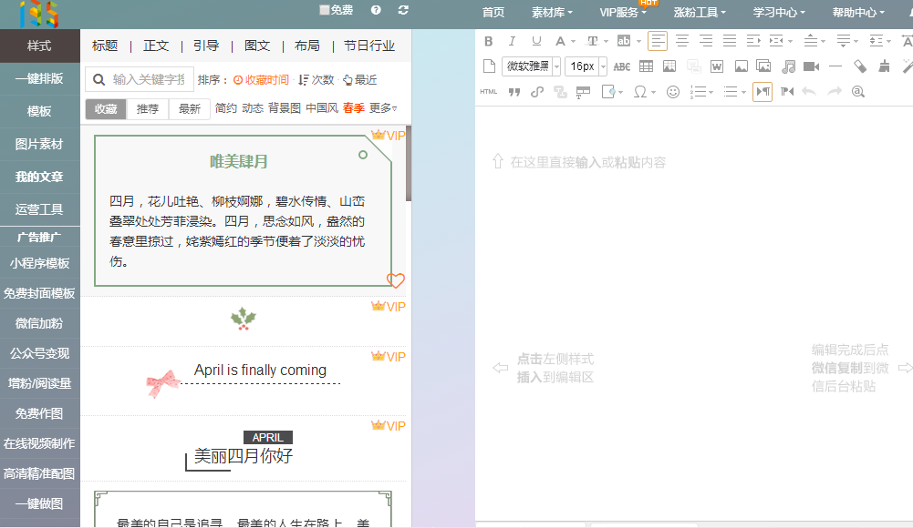
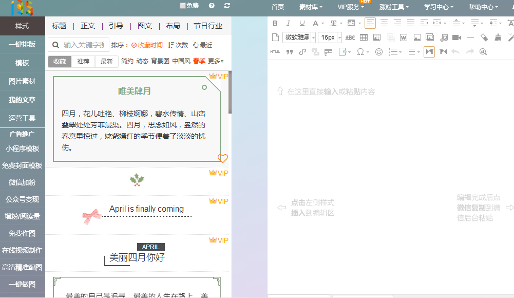

Most of these websites are similar to Xiumi, so once you learned How to use Xiumi, you can use thses websites as well. Good Luck!
You will be able to find more useful tools on:

Most of these websites are similar to Xiumi, so once you learned How to use Xiumi, you can use thses websites as well. Good Luck!